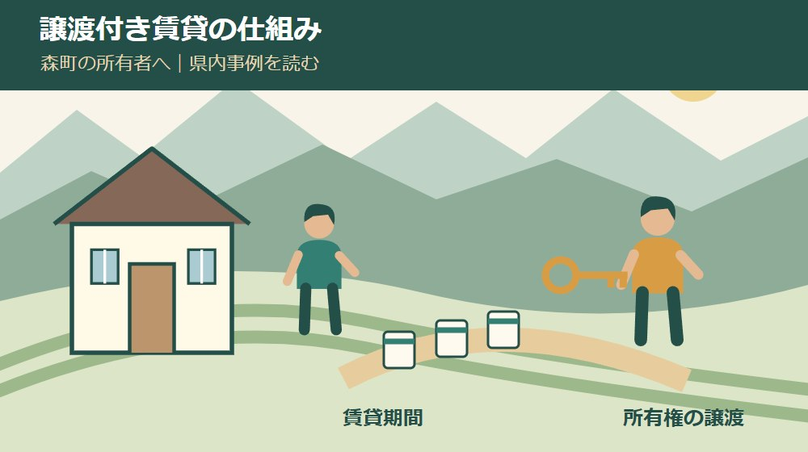
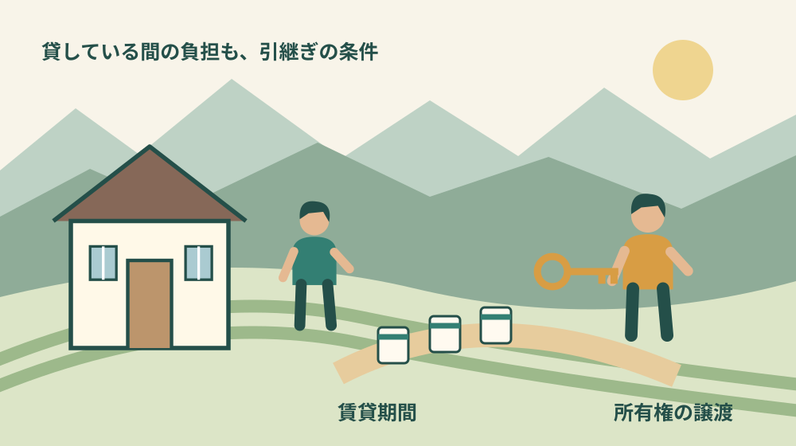
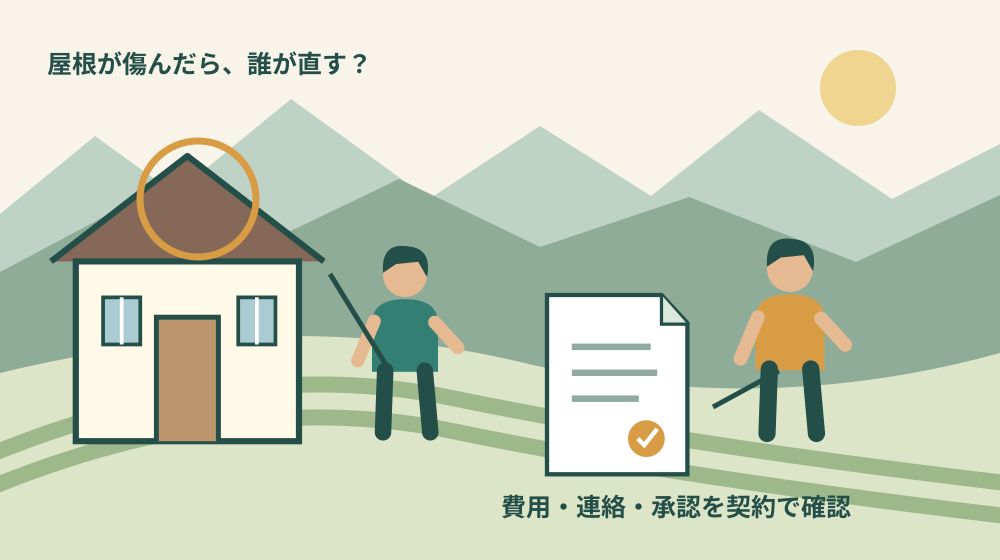

空き家・実家・相続
譲渡付き賃貸とは｜森町の空き家所有者が知る条件

Q. 譲渡付き賃貸なら、森町の空き家を無理なく引き継げる？
A. 譲渡付き賃貸は一定期間貸した後に所有権を渡す仕組みです。川根本町の事例は月6万5千円・84か月で満了後に無償譲渡しますが、全契約共通の条件ではありません。森町での導入は未確認です。修繕・途中退去・譲渡時費用を契約ごとに確認し、今日は修繕負担の質問を一つ作ってください。
維持費を払ってきた所有者にも、引き継ぎ方を選ぶ時間が要る
森町の空き家を残すか、売るか、貸すか。固定資産税や草刈り、雨漏りの確認を続けてきた家族にとって、どれも軽い選択ではありません。町外から通う移動の負担もあり、価格だけを比べても、次の住み手へ渡す道筋は決まりません。
私は大石浩之（磐田市／不動産業）です。今回は、一定期間貸した後に所有権を渡す「譲渡付き賃貸」を、空き家所有者の側から読みます。県内の事例を知ることと、森町の実家で同じ契約を結べることは別です。修繕や途中退去の条件まで確かめます。
2026年9月29日に静岡県と事業者の発表を確認しました。紹介する住宅は川根本町上長尾の事例です。森町で同方式が導入されていることや、現在募集している物件は、今回の資料では確認できていません。この記事は森町の募集物件の案内ではありません。
譲渡付き賃貸は、住む期間と所有権を渡す時点をつなぐ仕組み
空き家買取専科を運営する株式会社Sweets Investmentの発表では、譲渡付き賃貸は一定期間家賃を払って暮らし、契約満了後に物件の所有権を入居者へ無償譲渡する仕組みです。入居時から所有者になる通常の購入とは、所有権を受け取る時点が異なります。
普通の賃貸との違いは、将来の譲渡が契約の条件として組み込まれていることです。もっとも、名称だけで全国共通の期間や費用が決まるわけではありません。誰がいつ何を譲渡し、どの条件を満たす必要があるかは、契約ごとに確認することになります。
所有者が最初に考えるべきなのは「貸せば最後は自動で全部終わる」という期待を置かないことだと私は思います。賃貸期間中には家を使う人と所有者が並存します。屋根や設備の不具合があったときに、どちらが何を担うかを決める作業が残ります。
譲渡する対象も、住宅という呼び方だけで済ませない方がよいと私は考えます。土地と建物、敷地内の物置、接道や共有部分など、実際にどこまで契約へ含めるかを整理します。森町の実家に農地や別の土地が付くなら、同じ仕組みで一括処理できると推測しません。

10月9日の県研修は、申込受付を終えている
静岡県の「住宅ストック活用促進研修会」欄は、第2回のテーマを譲渡型賃貸として掲載しています。2026年10月9日14時30分～16時、オンライン開催、定員100人という案内です。確認時点では定員に達し、申込受付は終了しています。
登壇事業者は2026年9月1日の案内で、県内の実践事例を紹介すると説明しています。この日付は事業者の告知日で、住宅の募集開始日ではありません。県が研修で取り上げることも、すべての物件や契約の安全性を保証する意味にはなりません。
私は、研修の募集が終わっていても、公開済みの事例を契約条件の読み方に使う意味はあると考えます。参加できないから検討できないわけではありません。一方で、録画公開や追加募集は確認できていないため、後日必ず見られるとは案内しません。
県の案内は「譲渡型賃貸」、事業者の発表は「譲渡付き賃貸」という表現を使っています。この記事は事業者の具体的な住宅条件を軸にしています。同じような名前の商品でも契約の中身は別途読む、という姿勢で比較してください。
川根本町の一物件では、7年・84か月後に無償譲渡
事業者の2026年4月17日付発表は、川根本町上長尾の戸建住宅について、4月23日から入居者募集を始めるとしています。月額賃料は6万5千円、譲渡までの期間は7年、84か月です。以下の数字は、その住宅について発表された条件です。
契約満了後に所有権を無償譲渡するという案内ですが、家賃も諸費用もかからないという意味ではありません。賃貸期間中の支払いと、最後に所有権を渡す際の対価を分けて読む必要があります。「無償」の一語だけを家族へ伝えると誤解が残ります。
同発表では、途中退去は1か月前通知で可能としています。ただし、契約満了前に自己都合で退去する場合、それまでに支払った賃料は返還されません。入居者が途中で出る可能性を、所有者側も検討に含める必要があります。
火災保険、浄化槽、鍵交換、テレビアンテナ工事などの費用は別途必要とされています。公開された賃料に、生活や維持管理のすべての支出が含まれるわけではありません。契約前に総額を知りたいなら、費目ごとの負担者と支払時期を確認します。
構造に関わる修繕は、契約条件に基づき所有者が対応すると説明されています。将来譲渡する住宅でも、貸している間の所有者の修繕負担がなくなるとは限りません。この点は、空き家の維持費を減らしたい所有者が最初に読むべき条件だと私は考えます。
6万5千円を84回受け取っても、その全額が手元に残るわけではない
川根本町の発表条件を単純に掛け合わせると、6万5千円×84か月＝546万円です。これは全期間の賃料の合計であり、物件の売買価格、所有者の利益、入居者の住居費総額を表す数字ではありません。計算の意味をここで止めて確認します。
私は、所有者の判断では家賃合計から修繕や管理の支出を分けて見るべきだと考えます。購入・再生して貸す事業者と、既に実家を持つ家族では、最初の費用も異なります。546万円という数字を、森町の実家から得られる見込み額として使うことはできません。
比較用の家計表なら、入ってくる賃料、支出する税や保険、管理費、修繕費、譲渡時の費用を別々の欄にします。費用が未確定ならゼロを入れず「未見積り」と書きます。私は、その空欄こそ契約前に質問する場所だと考えます。
途中退去が起きれば、予定した期間の家賃がすべて入るとは限りません。次の住み手を探す費用や期間、再募集の条件も確認が必要です。ここで具体的な損失額は試算しません。物件の状態も契約も分からない段階で、都合のよい数字を置けないためです。
良い点｜売却だけに決めず、住み手へ渡す経路を考えられる
譲渡付き賃貸の良い点は、賃貸で暮らし始める期間と、その後の所有を一つの経路として検討できることです。事業者の事例は、入居者が住宅ローンを組まずに始める仕組みを示しています。ただし、入居審査や契約条件の確認は必要です。
所有者の側から見ると、将来の引継ぎを視野に入れながら、空き家へ住み手を迎える方法が増える点に意味があります。私は、売るか持ち続けるかの二択で話が止まっている家族が、第三の条件を読む入口になると考えます。
住み手が暮らしに合わせて家を手入れする余地も、個別事例の特徴です。ただし、改装できる範囲、事前承諾、工事の責任、途中退去時の扱いは、実際の契約で確認します。将来もらう予定だから何でも直せる、と一般化してはいけません。
森町での暮らしを選ぶ住み手にとっては、建物の条件に加えて通勤、買物、地域との関わりも判断材料になります。賃貸と購入を比較する移住の記事を読むと、所有の形だけでは決まらない生活の条件も整理できます。
私は、住み手が決まることだけで所有者の負担が解決したとは考えません。それでも、将来どこで所有を渡すかまで話題にできれば、家族が延々と管理を引き継ぐ以外の道を検討できます。可能性と条件を一緒に読むことが、この事例の使い方です。
注文したい点｜修繕と途中退去を、名称より先に読む
譲渡付き賃貸で注文したいのは、将来の無償譲渡の説明と同じくらい、賃貸期間中の負担を具体的に示してほしいことです。屋根の雨漏りと蛇口の不具合を同じ「修繕」にくくると、家族はどこまで資金を残すべきか判断できません。
私は、修繕の質問を「誰が払うか」だけで終えず、「誰が不具合を判断し、見積りを取り、工事を承認するか」まで広げます。支払者が決まっていても、連絡や判断が止まれば住み手は困ります。遠方の所有者には、その連絡経路も維持の仕事です。
途中退去では、家賃の返還、改装部分の扱い、残した物、鍵、契約終了の時点を確認します。川根本町事例の1か月前通知や返還なしという条件を、他の契約へそのまま当てはめません。発表資料と締結する契約書の違いを、専門家と照合します。
譲渡時には、所有権を移す手続、登記にかかる費用、税の扱い、必要書類を誰が準備するかを質問します。無償譲渡だから税や登記費用も不要だと決めつけないでください。具体的な税務は税理士、登記は司法書士などへ確認する事項です。
契約期間中に所有者や入居者の事情が変わった場合の扱いも残ります。相続が発生した場合や、住み続けられなくなった場合の連絡と契約の承継などは、一般記事だけでは答えを確定できません。長期間の契約だからこそ、開始時に確認する質問に加えます。

森町の空き家バンクは、契約を代わりに結ぶ制度ではない
森町の空き家・空き地バンクは、物件情報を登録・公開し、利用希望者へ情報提供する制度です。町の案内は、交渉や契約を町が行わないと明記しています。町のバンクに載せることと、譲渡付き賃貸の契約を組み立てることを同一視しないでください。
同案内では、空き家の管理は所有者が行う扱いです。将来の利用者を探す間にも、草木や郵便物、建物の状態を確認する担当は必要です。私は、募集方法を変える話と、募集期間の管理を誰が続けるかを同じ打合せで確認したいと考えます。
森町のバンクチェックリストには、雨漏り、床の傷み、シロアリ、設備、登記、境界などの確認項目があります。借り手へ渡す条件を考える前に、実家について分かっていることと分からないことを整理する入口として使えます。
ただし、チェック欄を埋めたことが建物の安全性や契約の適法性の保証にはなりません。傷みの判断が難しければ、建物状況調査で分かる範囲の記事も確認してください。現状を調べる作業と契約上の負担を決める作業は別です。
町へ相談する前の流れは、所有者向けの空き家バンクの記事で整理しています。譲渡を伴う条件で登録や紹介が可能かは、町と契約を扱う専門家へ個別に確認してください。本記事から、森町で利用できる制度だとは結論づけません。
対案・結論｜今日は修繕負担の質問を一つ作る
譲渡付き賃貸を検討する森町の所有者が今日行う一歩は、「契約期間中に屋根から雨漏りした場合、調査・応急対応・本修繕を誰が負担しますか」という質問を一つ作ることです。自宅で気になっている部位があれば、その部位へ置き換えてください。
質問には、分かる範囲で建物の状態や修繕履歴を添えます。雨漏りの時期、修理した場所、保存している写真、見積りの有無などです。分からない項目を良好と書かず、未確認として専門家へ渡す方が、契約の検討を誠実に進められます。
返答を受けたら、発見する人、連絡先、費用の承認者、支払う人、完了を確かめる人を分けて記録します。私は、修繕の負担額だけでなく手間まで見たいと考えます。森町へ通う回数が増える契約なら、その移動も所有者側の条件です。
その後に、普通に貸す場合、売却する場合、現状で管理を続ける場合と比較します。最初から譲渡付き賃貸を採用すると決める必要はありません。修繕の質問に答えが付いただけでも、他の選択肢を比べるための材料が増えます。
家族へ残す記録は、家賃の表と引継ぎ条件を分ける
家族へ共有する資料では、収入の見込みと所有権を渡す条件を別のページにします。月額賃料だけを目立たせると、満了時の譲渡や修繕の約束が後から出てきた話に見えてしまいます。家族が同じ範囲を読んで判断できる形を勧めます。
土地・建物の名義、共有者、借入れや担保の有無、境界資料の所在も確認事項です。家賃を受け取る口座を決めることと、所有権を渡す権限を確認することは違います。契約に関わる権限は、資料を示して専門家へ確認してください。
長い期間の資料は、家族が交代してもたどれる場所へ置きます。契約書だけでなく、修繕の合意、写真、請求書、相手への連絡記録も保存します。将来の譲渡を約束するなら、途中の記録も次の担当へ渡せることが、維持の条件になります。
大石の視点｜家賃合計より、最後まで担える条件を知りたい
私は、546万円という合計を見て、すぐに得な仕組みとは判断しません。貸す期間の修繕、連絡、管理を引き受け、最後に所有権を渡す条件です。所有者にとって必要なのは、見栄えのよい総額より、手元にいくら残り、どの仕事が残るかだと考えます。
私なら、家賃の計算を書いた紙の隣に、屋根、床、給排水、浄化槽の欄を作ります。これは実際の相談の再現ではなく、私の判断方法です。費用が分からない欄が残ったら、それを契約の弱点と決めつけず、次に調べる順番として使います。
森町の実家をこの形で引き継ぐのがよいかは、まだ分かりません。住み手の希望と所有者の負担が合う場合もあれば、売却や普通の賃貸の方が扱いやすい場合もあるはずです。私は、名称の新しさより、家族が継続して担えるかを判断の中心に置きます。
空き家の維持費を払い続けてきた人が、引継ぎ方を増やして考えることには意味があります。今日は契約を決めず、修繕の質問を一つ作る。県内の事例を森町の実家へ無理に当てはめず、条件を確かめながら次の住み手への道を探します。
よくある質問
譲渡付き賃貸の事例を読む際は、家賃、修繕、物件の所在地を分けて確認してください。
譲渡付き賃貸の家賃は、家を買う代金ですか？
川根本町の発表事例では、月6万5千円の賃料を7年間支払い、契約満了後に所有権を無償譲渡する仕組みです。84か月の賃料合計は546万円ですが、売買価格や諸費用込みの総額とは扱えません。自己都合の途中退去では既払賃料は返還されない案内です。他の契約も同じ条件とは限らず、契約書の確認が必要です。
将来譲渡するなら、修繕は入居者がすべて負担しますか？
すべて入居者負担とは限りません。紹介した川根本町の物件では、構造に関わる修繕は契約条件に基づき所有者が対応すると発表されています。屋根、床、給排水など部位ごとに、連絡、調査、工事の承認、費用負担を確認してください。将来の譲渡があることだけで、賃貸期間中の所有者の仕事が消えるとは考えないようにします。
森町にも譲渡付き賃貸の募集がありますか？
2026年9月29日に確認した資料では、森町での同方式の導入や募集物件は確認できていません。本文は川根本町上長尾の事業者発表を読む解説です。森町の空き家バンクは情報提供の制度で、町が契約を結ぶものではありません。自分の家で検討できるかは、町の登録条件と、契約を扱う専門家の両方へ確認してください。
実家の情報を一つずつ整理したい方は、実家カルテも確認できます。売却未定でも使える、本サイト運営会社の民間サービスです。森町役場の手続ではなく、利用は任意です。
公式情報源
2026年9月29日確認（2026年9月確認）。開催・受付状況、制度や費用は変わる場合があります。行動前に公式情報を確認し、個別の登記・税務・契約・工事の判断は担当窓口や専門家に相談してください。